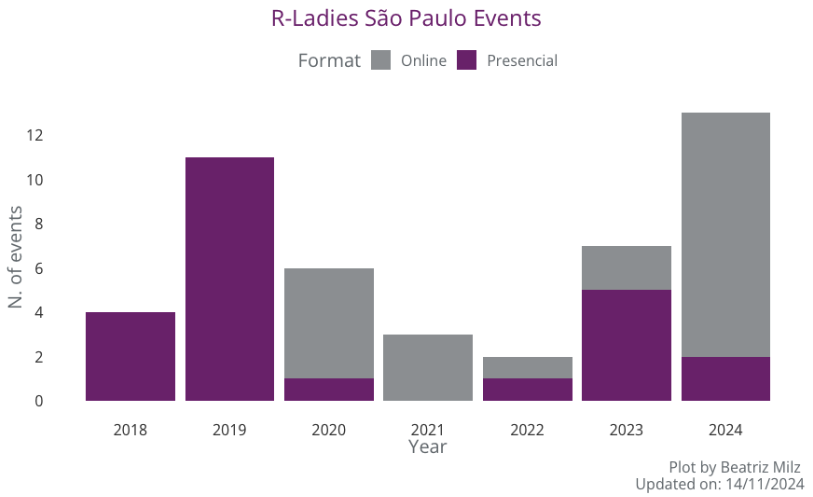
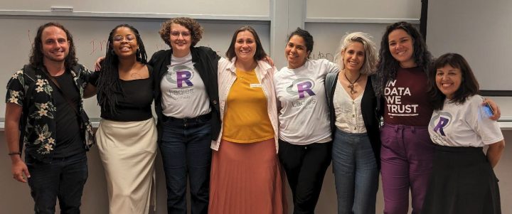

Esse texto é um repost, e a versão original em inglês pode ser lida no site da R Consortium.
Beatriz Milz, co-organizadora do R-Ladies São Paulo, recentemente conversou com a R Consortium sobre o vibrante crescimento da comunidade R em São Paulo e seu compromisso com a inclusão e o aprendizado acessível. Beatriz compartilhou insights sobre as atividades do grupo, desde a organização de eventos presenciais e online até a coordenação de um clube do livro focado no recém-traduzido R for Data Science para o português. Ela também discutiu as necessidades únicas das usuárias de R no Brasil e como a R-Ladies São Paulo apoia tanto iniciantes quanto usuárias avançadas por meio de eventos colaborativos e recursos impulsionados pela comunidade.

Por favor, compartilhe seu histórico e envolvimento com grupos da comunidade de R.
Meu histórico inclui uma graduação em gestão ambiental, um mestrado em análise ambiental e um doutorado em ciências ambientais. Durante o meu mestrado, minha orientadora mencionou que eu precisava aprender R para analisar os dados que estávamos coletando. No entanto, ninguém no laboratório estava familiarizado com R ou apto a me ajudar. Eu tentei aprender sozinha, mas isso não funcionou bem.
Eventualmente, minha orientadora me conectou com outro professor, e um pós-doutorando no laboratório dele me ajudou com a análise da minha dissertação de mestrado. Embora essa assistência tenha sido benéfica, me senti desconfortável em depender de outras pessoas para realizar a análise. Depois de concluir o mestrado e antes de iniciar o doutorado, decidi que queria aprender a programar para não depender tanto de outras pessoas na análise de dados.
Comecei a tentar aprender R novamente depois que uma amiga mencionou a comunidade R-Ladies. Em 2018, descobri que um novo capítulo estava começando em São Paulo. Participei do primeiro evento, que foi uma experiência incrível. Por volta dessa época, comecei a aprender R.
Em São Paulo, não organizamos apenas eventos; também temos um grupo no Telegram onde podemos nos comunicar entre os eventos. Isso me permitiu pedir recomendações de materiais de aprendizado, fazer perguntas e receber ajuda de outras pessoas da comunidade. Esse apoio foi inestimável para o meu processo de aprendizagem.
Dois meses após me envolver, comecei a ajudar na organização da comunidade. Inicialmente, a comunidade era relativamente nova, e uma pessoa fazia a maior parte das tarefas de organização: Haydee Svab. Ela expressou a necessidade de ajuda, não apenas com tarefas relacionadas ao R, mas também com a organização de eventos. Então, comecei a ajudar, e hoje ainda sou uma das co-organizadoras, enquanto Haydee continua sendo a co-organizadora principal.
Já se passaram seis anos desde que comecei a participar do grupo.
Atualmente, faço pós-doutorado, mas também trabalhei com consultoria por dois anos, período durante o qual utilizei extensivamente o R.
Você pode compartilhar como é a comunidade R-Ladies em São Paulo?
Nosso grupo é composto por pesquisadoras de diversas áreas que desejam aprender R ou que já o utilizaram. Muitas jornalistas começaram a usar R há alguns anos e se juntaram ao nosso grupo. Agora, essas jornalistas frequentemente convidam outras jornalistas. Temos muitas jornalistas que precisam aprender R para analisar dados públicos do governo para o trabalho jornalístico nos jornais.
Também temos muitas integrantes com formação em Estatística. Como a maioria dos cursos universitários tipicamente utiliza R, as estudantes que se juntam ao nosso grupo já têm experiência com ele desde a graduação. Além disso, muitas profissionais da indústria usam R para consultoria em diversas áreas.
Quantos eventos normalmente são realizados por ano na R-Ladies São Paulo?
Varia. Este ano (2024), organizamos dois eventos presenciais e muitos mais eventos online - 11. Realizamos, em média, 6,5 eventos por ano. No entanto, este ano, focamos mais em eventos online e tivemos menos eventos presenciais, principalmente porque reservar espaços para eventos presenciais tem sido mais difícil.

Sobre sua experiência, as pessoas demonstram mais interesse em eventos online ou presenciais?
As pessoas se envolvem mais em eventos presenciais. Elas aguardam com expectativa a participação nesses eventos, pois geralmente temos vagas limitadas, que se esgotam rapidamente. Frequentemente, temos uma lista de espera para aquelas que desejam participar. Se alguém cancelar, logo podemos oferecer a vaga a uma pessoa da lista de espera.
Por outro lado, os eventos online tendem a apresentar um padrão de participação diferente. Menos pessoas participam em tempo real, mas muitas se engajam posteriormente assistindo às sessões gravadas e deixando comentários. Essa flexibilidade permite que aquelas que não podem participar ao vivo se atualizem depois.
Embora os eventos online possam ter um impacto mais amplo ao alcançar um público maior, os eventos presenciais normalmente atraem mais participantes de uma só vez. Por exemplo, temos um canal no YouTube onde postamos as gravações dos nossos eventos online. Um determinado evento realizado durante a pandemia obteve mais de 13.000 visualizações, demonstrando um engajamento significativo após o evento. No entanto, apenas alguns eventos online atingem esse nível de audiência; a mediana para eventos gravados é de 330 visualizações. Mesmo assim, vejo valor nessas gravações, pois elas fornecem material para aquelas que desejam se envolver posteriormente. Às vezes, as pessoas simplesmente não tem disponibilidade para participar ao vivo.
Por favor, nos atualize sobre as atividades recentes do seu grupo.

Eu gostaria de comentar sobre uma série de eventos relacionados ao clube do livro que estamos organizando.
No Brasil, falamos português brasileiro. Um grupo editorial publicou a primeira edição do livro R for Data Science em português. A primeira edição está disponível apenas mediante compra, mas a versão em inglês é gratuita online.
Algumas comunidades realizaram traduções voluntárias; por exemplo, existe uma versão em espanhol. Quando soube que uma segunda edição do livro estava sendo escrita, entrei em contato com os autores para perguntar se poderíamos traduzi-lo para o português com a ajuda da comunidade. Levou algum tempo porque os autores precisaram da aprovação da O’Reilly, a editora responsável pelo livro.
Recebemos a confirmação de que poderíamos iniciar a tradução em setembro/2023. A segunda edição do livro foi traduzida e já está disponível em português! A equipe de tradução não se limita à comunidade da R-Ladies; conta com contribuições de mais de 20 pessoas de diferentes áreas de atuação.
Este clube do livro se concentra na discussão da versão em português traduzida do livro. Desde fevereiro/2024, temos realizado encontros online para discutir os capítulos do livro. As integrantes da comunidade da R-Ladies apresentam essas discussões, permitindo que as participantes façam perguntas e se envolvam em diálogo. Esses eventos têm funcionado muito bem.
Temos recomendado esse livro sempre que alguém pede alguma sugestão de material para estudar R.
Agora, a segunda edição do livro está disponível em português online e gratuitamente, para que qualquer pessoa com acesso à internet possa consultá-lo. É uma excelente forma de compartilhar conhecimento, tanto para aquelas que podem adquirir o livro quanto para quem tem acesso à internet, tornando-o um recurso de estudo valioso.
Quais são alguns tópicos em alta no grupo?
Nossos eventos com conteúdo introdutório atraem mais participantes. Isso provavelmente ocorre porque muitas participantes são novas no assunto ou estão em um nível intermediário, onde se sentem confortáveis para estudar de forma independente.
No entanto, quando perguntamos às participantes sobre seus interesses em diferentes tópicos, muitas demonstraram vontade de aprender sobre aprendizado de máquina e outros assuntos em alta, como deep learning e inteligência artificial. O desafio é que precisamos de pessoas mais experientes para ensinar esses tópicos avançados. Embora muitas pessoas se interessem por essas áreas, organizar eventos sobre elas pode ser mais difícil devido à complexidade envolvida.
Que ferramentas você recomenda para planejar ou conduzir o evento? (ex.: GitHub, Zoom, etc.) Essas ferramentas podem ajudar a tornar o seu grupo mais inclusivo para pessoas que não podem participar de eventos presenciais no futuro?
Nós utilizamos o StreamYard para nossos eventos online. A versão gratuita tem sido útil. Anteriormente, quando realizávamos eventos pelo Zoom, precisávamos editar as gravações e enviá-las depois para o Youtuve. Esse processo costumava demorar, principalmente porque todas as organizadoras estavam ocupadas, o que atrasava a disponibilização dos eventos online. O StreamYard facilitou esse processo para nós, embora ofereça menos espaço para a interação com as participantes.
Temos um recurso de chat com o StreamYard, mas as participantes também podem compartilhar suas telas no Zoom. Portanto, a plataforma que escolhemos depende do tipo de evento que queremos realizar. Em alguns eventos, as participantes precisam compartilhar suas telas, por isso optamos pelo Google Meet ou Zoom.
Uma melhoria importante foi o uso do GitHub. Criamos modelos de issues como uma lista de tarefas para organizar os próximos eventos. Esse sistema nos ajuda a lembrar de tudo o que precisamos fazer.
Além disso, temos um blog que convida as integrantes da comunidade a contribuírem com artigos. Ele permite que as pessoas escrevam sobre temas interessantes, independentemente do nível de especialização. Algumas hesitam em apresentar nos eventos, mas se sentem confortáveis em escrever posts no blog. Isso serve como sua primeira contribuição ou participação na nossa comunidade, fazendo com que passem de simples participantes para colaboradoras ativas.
No geral, o blog é uma excelente forma de incentivar as pessoas a fazerem suas primeiras contribuições.
Como construir um Grupo de Usuários de R?
O Programa de Apoio a Grupos de Usuários de R e Pequenas Conferências (RUGS) da R Consortium oferece subsídios para ajudar grupos de R a se organizarem, compartilharem informações e se apoiarem mutuamente em todo o mundo. Ao longo dos últimos quatro anos, concedemos subsídios que beneficiaram mais de 76.000 integrantes em mais de 90 grupos de usuários em 39 países. Queremos incluir você! Subsídios em dinheiro e contas no meetup.com são concedidos com base no uso pretendido dos recursos e na quantia de dinheiro disponível para distribuição.